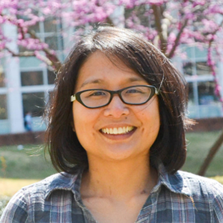

Inspiring Futures: Bianca Baldassarri's Journey with Science Corps in the Philippines
Bianca taught Research and Physics at CVIF in Bohol, Philippines — a heartfelt story of connection, learning, and inspiration through science.
Read more →
Reinabelle Reyes — Data Science & Beyond
Reinabelle Reyes, Ph.D. discusses her journey from Metro Manila to heading a data science research group at UP Diliman and consulting for UNDP Philippines.
Read more →
Iris Bea Ramiro — Cone Snails, Copenhagen & Beyond
Bea grew up in Bohol surrounded by nature. She discovered a hormone-like peptide from cone snails with biomedical applications and now researches at the University of Copenhagen.
Read more →
Ariane Peralta — Microbiology, Wetlands & Climate Change
Ariane Peralta is an Associate Professor of Biology at East Carolina University. Her lab studies how climate and human-induced changes affect environmental microbiomes.
Read more →
Hyacinth Suarez — Marine Biology & Black Corals
Hyacinth Suarez is a Boholana marine biologist and faculty member at Holy Name University. Her research focuses on mesophotic corals, particularly black corals in the Philippines.
Read more →
Filipinas in STEM Series Launch
Science Corps fellow Swastika Issar launches an interview series celebrating Filipina women in STEM — highlighting their journeys, wins, and struggles through short interviews.
Read more →Congratulations to the 2020 Nobel Prize in Chemistry Winners
Science Corps co-founder Ben Rubin interviewed Professor Jennifer Doudna — we're bringing back this wonderful conversation to celebrate her Nobel Prize win in Chemistry.
Read more →Photos from Gaby's Fellowship at Aavishkaar, India
A photo gallery from Gabriela's Science Corps fellowship at Aavishkaar in Palampur, India — student interactions, field experiments, and community moments.
View gallery →